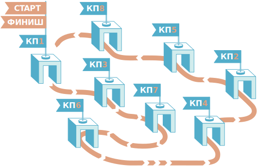

<!doctype html>
<html lang="ru">
<head>
    <meta charset="utf-8"/>
    <meta name="viewport" content="width=960">
    <title>Task</title>

    <link href="https://childrenscience.ru/apps/tasks/_framework/libs.min.css" rel="stylesheet" type="text/css">
    <link href="https://childrenscience.ru/apps/tasks/_framework/style.css" rel="stylesheet" type="text/css">

    <link href="./style.css" rel="stylesheet" type="text/css">

    <script type="text/javascript" src="https://childrenscience.ru/apps/tasks/_framework/libs.min.js"></script>
    <script type="text/javascript" src="https://childrenscience.ru/apps/tasks/_framework/index.js"></script>

    <script type="text/javascript">
        globalVars.currentTask = 1;

        var task = [

            {},

			// step 1 //////////////////////////////////////////////////////////////////

            {
                "nextStepDelay": 1000,
                "button": true,
                "buttonActive": false,

                "test_help": {
                    "help_message": "Проследите, какой номер КП переходит в какой на маршруте Дениса"
                },

                "test_images":
                    [
                        {
                            "classes": "task_description",
                            "value": "Задача"
                        },
                        {
                            "classes": "step-description1",
                            "value": "На соревнованиях по спортивному ориентированию Денис прошел все контрольные пункты (КП) в порядке, показанном на рисунке.<br><br>Запишите в виде перестановки порядок следования номеров КП в маршруте Дениса."
                        },
                        {
                            "classes": "step-description2",
                            "value": "1&nbsp&nbsp&nbsp2&nbsp&nbsp&nbsp3&nbsp&nbsp&nbsp4&nbsp&nbsp&nbsp5&nbsp&nbsp&nbsp6&nbsp&nbsp&nbsp7&nbsp&nbsp&nbsp8"
                        },
                        {
                            "classes": "step-description3",
                            "value": "3"
                        },
                        {
                            "classes": "step-description4",
                            "value": "1"
                        },

                        {
                            "classes": "_image1",
                            "value": ""
                        },
                        {
                            "classes": "_image2",
                            "value": ""
                        },
                        {
                            "classes": "_image3",
                            "value": ""
                        }
                    ],

                "test_drag_n_drop": {
                    "emptyCheck": true,
                    "stackMode": true,

                    "draggables": [
                        {},
                        {"value": "2"},
                        {"value": "4"},
                        {"value": "5"},
                        {"value": "6"},
                        {"value": "7"},
                        {"value": "8"}
                    ],

                    "droppables": [
                        {},
                        {"values": "5"},
                        {"values": "7"},
                        {"values": "2"},
                        {"values": "8"},
                        {"values": "4"},
                        {"values": "6"},


                    ]
                }
            },

            // step 2 //////////////////////////////////////////////////////////////////

            {
                "nextStepDelay": 1000,
                "button": true,
                "buttonActive": false,

                "test_help": {
                    "help_message": "Мне его не дали("
                },

                "test_images":
                    [
                        {
                            "classes": "task_description",
                            "value": "Задача"
                        },
                        {
                            "classes": "step-description",
                            "value": "Сколько всего существует различных способов построить маршрут через все КП, начав и закончив КП1?"
                        },


                        {
                            "classes": "__image1",
                            "value": ""
                        }
                    ],

                "test_clickable":
                    [
                        {
                            "multiselect": false,
                            "autocheck": false,
                            "classes": "clickable_orange"
                        },
                        
                        {
                            "value": "8!",
                            "right": false
                        },
                        {
                            "value": "7!",
                            "classes": "second-answer",
                            "right": true
                        },
                        {
                            "value": "6!",
                            "classes": "third-answer",
                            "right": false
                        },
                        {
                            "value": "Другой ответ",
                            "classes": "fourth-answer",
                            "right": false
                        }
                    ]
            },
        ];
    </script>
</head>
<body>
</body>
</html>
